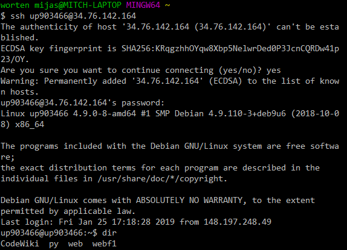

Week 01
In week 1 of university we were given the logins to our VMs (Virtual Machines) which are locally hosted and require the VPN in order to connect too. This was many people's first experiance at using linux (The VMs run on Debian). We were instructed to connect to the VM by using the SSH (Secure Shell) Protocol.
In order to use SSH an SSH client is required. One of the moar popular choices of clients was putty. We were recommended to use a browser plugin to connect if we were unfamiliar, however I already had GitBash installed so I decided that I'd prefer to use that.

Week 02
At the beginning of this week we started by trying to write down all of the various types of data that we, as individuals, generate on a daily basis. Then we considered how this information would be captured online and how it can be used by companies.
Having settled on what information we generate on a daily basis we were to sort the data into various categories. Where the categories essentially form a gradient of the information's respective confidentiality. The only requirement of the information is that all of the categories are to be described in Layman's terms and is therefore easy to understand by anyone.
Week 03
This week we focused on learning how to read academic papers and review various pieces of literature.
We were given this paper which actually gives a bit of an insight on how to read papers. It was extremely useful and helped a lot whilst trying to find relevant and useful papers for our literature review. A sheet was also provided for us to follow.
What is a literature review?
A literature review will essentially summarise a collection of papers for a given topic. It'll summarise their views to allow another academic to view what's happening within the topic much faster than having to read countless papers.
What is a paper?
A paper can be defined as: "A formal evaluation off the written academic research on a particular subject"
When creating writings like this the author should remain unbiased, objective and reliable. The literature review that's in hand should also identiy relevant existing academic work, major concepts, relationships and patterns and the context of any future work.
Week 04
This week's focus was academic writing, our lecture covered the basics informing us of how to write and format a literature review.
Week 05
An introduction to markup!
As I'm sure you're already aware, HTML stands for Hyper Text Markup Language. This is the most common language that's used to structure websites on the internet.
The practicals of this week were focused on making people more comfortable with using their VMs. Navigating the file system and hosting websites from them on the University network!
I already felt fairly comfortable with all of these topics as I spent around 5 months in the past using a flavour of Linux called Zorin and make use of my own VPS running Ubuntu.